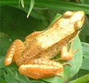
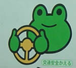
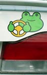
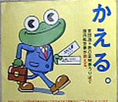
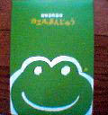
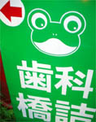
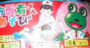

|
 金色のアカガエル発見！【千葉発神家同志記者】こちらは千葉の真中あたり メダカの池に行く途中すごく目立つ光り物を草むらで発見しました。【ケロッピイセブン同志記者】これは素晴らしいですね。こんなアカガエル見たこと無いです。日本が再び黄金の時代にカエルという吉兆ですね！大昔なら元号変わっちゃうかも？（笑）下総の国に黄金のカエルが現れたって。
元号を『金蛙』と改元す！千葉県は『金蛙慶祝』県に改称！【全国かえる奉賛会】えー。千葉県で黄金のカエルが発見されたとの報に接し、全国かえる奉賛会は、本年をもって元号を改元するぞおおおおおお。だから今年は『金蛙元年』だぞ。ついでにキリスト生誕暦である西暦使用は、今後は全廃することにしたあああああ。発見した千葉県は、今後は金蛙慶祝県と改称することにしたああああああ。報告した神家同志記者には、感状を贈るので連絡してくれい。 かえる自動車学校でカエル免許取得！ 【広島発みかえる＆けお同志記者】今回は、カエラーならばぜひ入校しなければならない学校を紹介しましょう。先日、みかえるさんの実家に帰省した際、車で移動中ふとみると自動車学校の看板が。まっ、どこにでもあると思ってたら大間違い。なんと、カエルの自動車学校だったのです!!! 看板にも、車にもハンドルを持つ可愛いケロ達の姿が。こんな自動車学校だと、カエラー達もなごんで免許が取れますね。
【全国かえる奉賛会】素晴らしいぞお。この自動車学校の卒業生は、免許証もカエルデザインで、警察の取締も免除だあといいなああああ。
 地下鉄の駅で飛行機のチケットがカエル！【江戸発m-frog同志記者】先日、東京へ行った時に、原宿駅で見かけたポスターです。 あっ！これは！と思い、写真に撮っておきましたのでお送りします。なんでも、地下鉄の駅で飛行機のチケットがカエルそうです。
【全国かえる奉賛会】地下鉄で冬眠している時から、びよおおおおんと飛べる飛行機の切符がカエルとはああ。さすがに東京なだけあるぞお。
 かえるは日本の心！健在なりカエル饅頭！【名古屋発m-frog同志記者】私がかえる新聞を知る前に出た事があるかもしれませんが、名古屋のお土産に頂きました。お饅頭もかえるでかわいかったです。お饅頭を作ってる会社の資料室には1500個のかえるの置物があるそうです。見に行ってみたいなぁ。（青柳総本家は創業明治12年だそうです。やはりかえるは日本の心ですよね。）
【全国かえる奉賛会】かえる展で販売しましたああ。青柳総本家、がんばってるなああ。
佐賀県江北町ビッキーの石の車止めを出荷！【佐賀発m-frog同志記者】過去の新聞にも載ってたけど、佐賀の江北町のビッキーに関する情報です。以前、自分が勤めていた会社に公園の車止めを作って欲しいと依頼があって、デザイン担当の者が設計した、ビッキーの石の車止めを出荷しました。モデルはケロケロケロッピなんです。知ってました？知らず知らずに、蛙に関係してたみたいなのさ！二つ並んで車をとうせんぼなのさ！
場所は忘れたなー。すみません。石の色はもちろん緑色の石です。ミドリの石は値段も高いよ。多分、一基あたり、うん十万だったような？p>
【全国かえる奉賛会】うおーー画像の投稿を待つ！佐賀県の人はみかけたら投稿してくれえええ。
 江戸にカエル医者が続出！ 【東京発みき同志記者】江戸を歩いていると、カエル医者セットを発見しました。カエルの医者から診察されるなんて素ばらしすぎるうう。非売品だったのが残念です。さらに町を歩いていると、今度はカエル歯医者の看板を発見。遊びのお医者さんごっこも、本物のお医者さんも、カエル一色になっている最近の東京です。
【全国かえる奉賛会】さすがに東京はカエル化進行が進むなあああ。歯がないカエルも歯科医の看板になる時代だ。カエル看護師も登場してくれい。

カエルサボテン九期七月分は１０匹だあああ！発売中！【ケロ天市場】きっと今回が最後になるかもしれない九期発売が先月から始まっていますが、今回は七月分の１０匹です。九月以降の販売予定はないので、ケロ天市場で『カエルサボテン』をゲットしておきましょう。にんまり顔とにっこり顔があるんで、どちらでも選べます。
|
メールマガジン登録
メールマガジン解除
Powered by


かえる古新聞過去に取り上げた記事を見出し付きで一覧したい人は、ここをクリック◆創刊号を見る◆先週号を見る◆話題の号を見る◆かえる新聞の昔を読む
|
私も入っています。。全国かえる奉賛会
大王様に会うには、このバナーをクリック。ずっと奥に写真館があるぞ。全国かえる奉賛会に入会するには、自分のホームページのどこかに、下の部分を追加するとバナーがリンク付きで表示されるぞ。どんどん入会しましょー |


|